Time Series Basics#
Learning Objectives
By the end of this chapter, you will be able to:
Explain why time series data require special treatment compared to independently and identically distributed data.
Load and prepare time series data with a
DatetimeIndexin pandas, and handle missing values using forward fill, backward fill, and linear interpolation.Compute and interpret moving averages (
rolling().mean()) and exponential smoothing (ewm()) to explore trend and seasonality.Define autocorrelation (ACF) and partial autocorrelation (PACF), interpret their plots, and relate them to predictability at different lag times.
Apply the Augmented Dickey-Fuller test to assess stationarity and use first-order differencing to transform a non-stationary series into a stationary one.
%matplotlib inline
import numpy as np
import pandas as pd
import matplotlib.pyplot as plt
plt.style.use('../settings/plot_style.mplstyle')
clrs = np.array(['#003057', '#EAAA00', '#4B8B9B', '#B3A369', '#377117',
'#1879DB', '#8E8B76', '#F5D580', '#002233'])
What Makes Time Series Special?#
Most data science methods assume observations are independent and identically distributed (i.i.d.): shuffling the rows of a dataset should not affect the analysis. Time series data violates this assumption fundamentally — measurements taken close together in time are almost always correlated. The CO₂ concentration measured this week is highly predictive of next week’s value; the impurity level in a distillation column at 3 PM depends on what happened at 2 PM.
Ignoring this temporal dependence has real consequences:
A random train/test split mixes past and future, leaking information about the test period into the training set and producing optimistic accuracy estimates.
Models that treat each row independently discard predictive information that is sitting in the lag structure.
Standard statistical confidence intervals assume i.i.d. errors; correlated residuals make those intervals overconfident.
A time series can be decomposed into components that are easier to model separately:
where \(T_t\) is a trend (long-run increase or decrease), \(S_t\) is seasonality (periodic oscillations with fixed frequency), \(C_t\) is cyclicity (irregular long-period oscillations), and \(\varepsilon_t\) is noise. Multiplicative decompositions (\(x_t = T_t \cdot S_t \cdot \varepsilon_t\)) are also common when the seasonal amplitude grows with the level of the series.
Understanding which components are present guides the choice of preprocessing steps and models, as we will see throughout this chapter.
Exercise 109
Illustrate the danger of a random train/test split on time series data.
Using
dow_df['y:Impurity'], create a random 80/20 split withtrain_test_split(..., random_state=0)and a chronological 80/20 split (first 80% of rows as training, last 20% as test).For each split, fit a
LinearRegressionthat uses the integer row index as the only feature (i.e., predict impurity from time step number). Report train and test \(r^2\) for both splits.Explain in one or two sentences why the random split produces an optimistic test \(r^2\) compared to the chronological split.
Datasets#
We will work with two complementary datasets throughout Chapters 6.1 and 6.2:
Dow impurity (short-term, industrial): The distillation column impurity introduced in Module 2 and 4, measured approximately every hour over several months. It is a short-range industrial process time series with moderate autocorrelation.
Mauna Loa CO₂ (long-term, environmental): Weekly atmospheric CO₂ concentration measured at Mauna Loa, Hawaii from 1958–2002. This dataset has a strong linear trend, clear annual seasonality, and a handful of missing values — an ideal teaching example.
Loading the Data#
# Dow impurity: use only the date and impurity column
df = pd.read_excel('data/impurity_dataset-training.xlsx')
dow_df = df[['Date', 'y:Impurity']].copy()
dow_df['Date'] = pd.to_datetime(dow_df['Date'])
dow_df = dow_df.set_index('Date')
print(f'Dow: {dow_df.shape}, index range: {dow_df.index.min()} → {dow_df.index.max()}')
Dow: (10703, 1), index range: 2015-12-01 00:00:00 → 2017-02-18 23:00:00
dow_df.plot(figsize=(10, 3))
plt.title('Dow Column Impurity vs. Time')
plt.tight_layout()
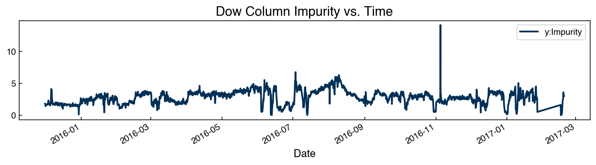
import statsmodels.api as sm_api
co2_raw = sm_api.datasets.co2.load_pandas().data
print(f'CO₂: {co2_raw.shape}, missing: {co2_raw["co2"].isna().sum()}')
co2_raw.plot(figsize=(10, 3))
plt.title('Mauna Loa CO₂ Concentration (ppm)')
plt.tight_layout()
CO₂: (2284, 1), missing: 59
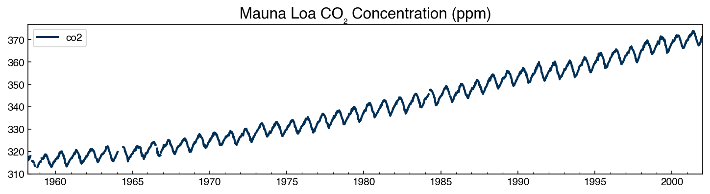
You should see the CO₂ concentration rising from about 315 ppm in 1958 to 375 ppm by 2001, with clear annual oscillations of ~7 ppm amplitude — the breathing of the Northern Hemisphere biosphere.
Exercise 110
Explore the structure of both datasets.
For
dow_df, compute the time difference between consecutive rows usingdow_df.index.diff(). What is the typical sampling interval? Are there any gaps longer than 2 hours?For
co2_raw, report the total number of missing values and the years in which they occur (hint:co2_raw[co2_raw['co2'].isna()].index.year).Plot the Dow impurity series and the CO₂ series side by side. Identify which of the four components (trend, seasonality, cyclicity, noise) appears to be present in each.
Data Cleaning: Missing Values and Interpolation#
A single missing value in a time series can corrupt many downstream steps (differencing, autocorrelation, ARIMA fitting all require complete series). It is therefore important to fill gaps before analysis.
# Zoom in on a year with missing values
co2_raw['1964':'1964'].plot(figsize=(8, 3))
plt.title('CO₂ — 1964 (raw, with gaps)')
plt.tight_layout()
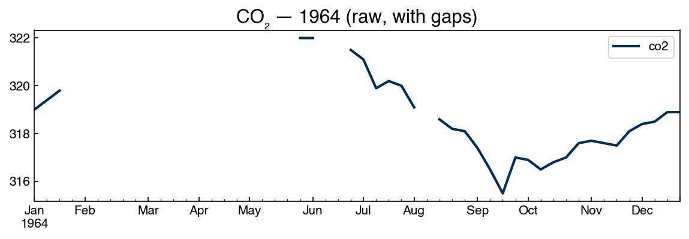
Pandas provides several strategies for filling missing values:
interp_df = co2_raw.copy()
interp_df['forward_fill'] = interp_df['co2'].ffill()
interp_df['back_fill'] = interp_df['co2'].bfill()
interp_df['linear_interp'] = interp_df['co2'].interpolate(method='linear')
interp_df['spline_interp'] = interp_df['co2'].interpolate(method='spline', order=3)
# Zoom in to compare strategies
interp_df['1964':'1964'].plot(figsize=(10, 4))
plt.title('Comparison of missing-value strategies — 1964')
plt.tight_layout()
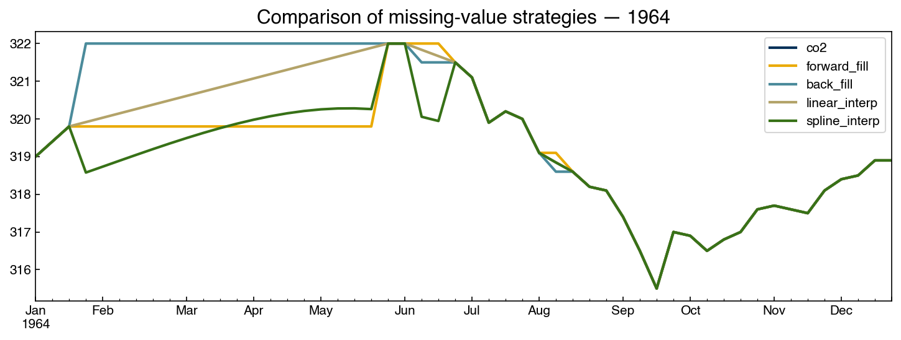
Of these, linear interpolation is generally the best default for short gaps: it avoids the staircase artifact of forward/backward fill and does not risk overfitting to local curvature the way spline interpolation can. For gaps longer than a few periods, consider whether the data can reasonably be predicted at all — imputation over large gaps can introduce patterns that do not exist in the original signal.
# Keep interpolated series and original for comparison
co2_df = interp_df[['co2', 'linear_interp']].rename(columns={'linear_interp': 'co2_interp'})
print(f'Remaining NaNs: {co2_df["co2_interp"].isna().sum()}')
co2_df.head(5)
Remaining NaNs: 0
| co2 | co2_interp | |
|---|---|---|
| 1958-03-29 | 316.1 | 316.1 |
| 1958-04-05 | 317.3 | 317.3 |
| 1958-04-12 | 317.6 | 317.6 |
| 1958-04-19 | 317.5 | 317.5 |
| 1958-04-26 | 316.4 | 316.4 |
Exercise 111
Compare interpolation strategies on the Dow impurity series.
Artificially introduce 5 consecutive missing values at a location of your choice in
dow_df['y:Impurity'](e.g., rows 100–104).Apply forward fill, backward fill, and linear interpolation to fill the gap.
Plot all three filled series alongside the original (unmodified) values for the surrounding 20 rows. Which strategy most closely matches the original?
Compute the mean absolute error between each filled series and the original for those 5 points. Report the results.
Smoothing#
Moving Average#
A moving average replaces each point with the mean of its \(M\) nearest predecessors:
Larger windows smooth out high-frequency noise and reveal lower-frequency trends.
Pandas implements this with .rolling(M).mean():
fig, ax = plt.subplots(figsize=(10, 4))
for window in [1, 4, 12, 26, 52]:
ma = co2_df['co2_interp'].rolling(window).mean()
ma['1990':'2000'].plot(ax=ax, alpha=0.7, label=f'window={window}w')
ax.legend()
ax.set_title('Moving average — CO₂ (1990–2000)')
plt.tight_layout()
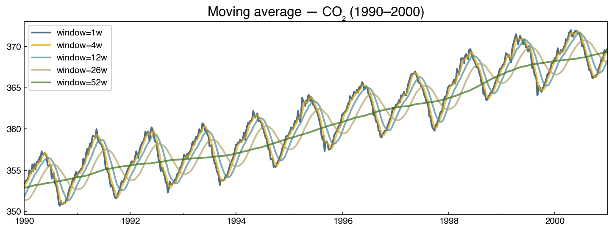
At window = 52 weeks (one year), the seasonal cycle is almost entirely removed, revealing the underlying upward trend. At smaller windows the seasonal pattern is preserved but short-term noise is reduced.
We can also inspect the rolling standard deviation to check for heteroscedasticity (variance that changes over time):
rolling_std = co2_df['co2_interp'].rolling(52).std()
rolling_std.plot(figsize=(10, 3))
plt.title('Rolling standard deviation (52-week window)')
plt.tight_layout()
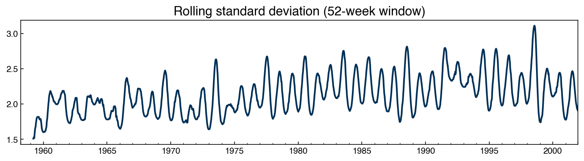
Exponential Smoothing#
Exponential smoothing applies a geometrically decaying weight to past observations:
Unlike a moving average, which weights all points in the window equally, exponential smoothing weights recent points more heavily. The parameter \(\alpha \in (0,1)\) controls the decay rate: \(\alpha\) near 1 gives almost no smoothing; \(\alpha\) near 0 gives strong smoothing.
Pandas implements this with .ewm(alpha=α).mean():
fig, ax = plt.subplots(figsize=(10, 4))
co2_df['co2_interp']['1995':'2000'].plot(ax=ax, label='raw', alpha=0.4)
for alpha in [0.05, 0.2, 0.7]:
smoothed = co2_df['co2_interp'].ewm(alpha=alpha).mean()
smoothed['1995':'2000'].plot(ax=ax, label=f'α={alpha}')
ax.legend()
ax.set_title('Exponential smoothing — CO₂ (1995–2000)')
plt.tight_layout()
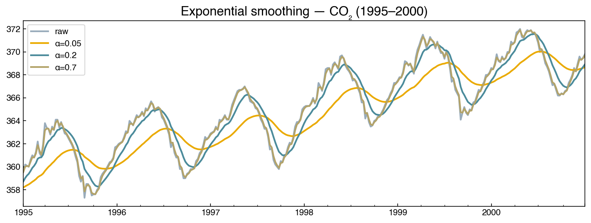
Exercise 112
Compute the moving average for the Dow impurity series with a window of 24 time steps (approximately one day of hourly measurements).
Plot the raw series and the 24-step moving average on the same axes for a two-week period of your choice.
Also compute the 7-day rolling standard deviation. Does the variance appear to change over time (heteroscedasticity)?
Compare the 24-step moving average to exponential smoothing with \(\alpha = 0.1\). Which approach removes more short-term noise? How does the choice affect the visibility of any day-to-day patterns?
Signal Compression and Data Historians#
A running plant produces an enormous volume of time-series data: thousands of sensors (“tags”) sampled every few seconds, continuously, for years. Storing every raw reading is impractical, so industry relies on data historians — specialized time-series databases (the AVEVA/OSIsoft PI System is the best known; InfluxDB is a popular open-source option) that ingest and compress these streams as they arrive. The Dow dataset we are using is itself a historian export.
Historian compression is lossy but bounded: it discards readings that fall within a set tolerance of a straight line, keeping only the points needed to reconstruct the signal to within that tolerance. The classic method is swinging-door trending (SDT). Picture standing at the last stored point and opening two “doors” — an upper slope and a lower slope — just wide enough to keep every later point inside a corridor of half-width δ. As each new reading arrives the doors may swing only open, never shut. The instant the two doors cross — meaning no single straight line from the stored point can stay within δ of every point seen so far — the previous point is archived and the corridor restarts there.
def swinging_door(t, y, delta):
"""Swinging-door (SDT) compression: indices of the points a historian keeps."""
keep = [0]
t0, y0 = t[0], y[0]
s_max, s_min = -np.inf, np.inf # lower-door / upper-door slopes
for i in range(1, len(y)):
dt = t[i] - t0
s_min = min(s_min, (y[i] + delta - y0) / dt)
s_max = max(s_max, (y[i] - delta - y0) / dt)
if s_max > s_min: # corridor closed: archive previous point
keep.append(i - 1)
t0, y0 = t[i - 1], y[i - 1]
dt = t[i] - t0
s_min = (y[i] + delta - y0) / dt
s_max = (y[i] - delta - y0) / dt
keep.append(len(y) - 1)
return np.array(sorted(set(keep)))
y = dow_df['y:Impurity'].to_numpy()[:800]
t = np.arange(len(y), dtype=float) # hourly samples
delta = 0.1 * np.std(y)
kept = swinging_door(t, y, delta)
recon = np.interp(t, t[kept], y[kept])
plt.figure(figsize=(10, 3))
plt.plot(t, y, color='0.75', label=f'original ({len(y)} points)')
plt.plot(t[kept], y[kept], 'o-', ms=3, label=f'archived ({len(kept)} points)')
plt.xlabel('Time (hours)'); plt.ylabel('Impurity')
plt.legend(); plt.title('Swinging-door compression of the Dow impurity signal')
plt.tight_layout()
print(f'Compression ratio: {len(y) / len(kept):.1f}x')
print(f'Max reconstruction error: {np.max(np.abs(recon - y)):.4f} (tolerance δ = {delta:.4f})')
Compression ratio: 7.8x
Max reconstruction error: 0.0768 (tolerance δ = 0.0422)
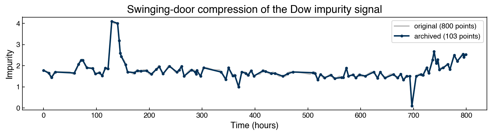
The archived series follows the original closely while storing a fraction of the points, and — by construction — never deviates by more than δ. At plant scale, with tens of thousands of tags sampled every second, this is the difference between an affordable data system and an impossible one — and it means the data you later pull from a historian has already been compressed, at a resolution someone chose upstream.
Exercise 113
Investigate the compression/fidelity trade-off of the swinging-door algorithm.
Run
swinging_dooron the Dow impurity series for several tolerances δ (e.g., 0.05σ, 0.1σ, 0.25σ, 0.5σ, where σ is the standard deviation of the signal).For each, record the compression ratio and the maximum reconstruction error.
Plot compression ratio versus δ, and describe the trade-off you observe.
Autocorrelation#
The Key Idea#
Autocorrelation captures how correlated a time series is with a lagged version of itself. If \(x_t\) and \(x_{t-k}\) are highly correlated at lag \(k\), then knowing the value at time \(t-k\) helps predict the value at time \(t\).
We can see this directly by plotting \(x_{t-\text{lag}}\) against \(x_t\):
from scipy.stats import pearsonr
lag = 20
dataset = co2_df['co2_interp'].dropna().values
xs = dataset[:-lag]
ys = dataset[lag:]
r, _ = pearsonr(xs, ys)
r2 = r**2
fig, ax = plt.subplots(figsize=(5, 4))
ax.scatter(xs, ys, alpha=0.2, s=5)
m, b = np.polyfit(xs, ys, 1)
ax.plot([xs.min(), xs.max()], [m*xs.min()+b, m*xs.max()+b], '--', color=clrs[1])
ax.set_xlabel(f'CO₂ at lag {lag}')
ax.set_ylabel('CO₂ now')
ax.set_title(f'Lag-{lag} autocorrelation: r² = {r2:.4f}')
plt.tight_layout()
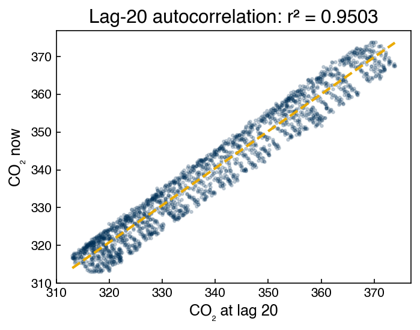
The near-perfect linear relationship (slope ≈ 1) tells us that CO₂ 20 weeks ago predicts CO₂ now with very high accuracy. This is the essence of autocorrelation.
ACF and PACF Plots#
The autocorrelation function (ACF) plots the correlation coefficient between \(x_t\) and \(x_{t-k}\) for each lag \(k\). The partial autocorrelation function (PACF) shows only the direct effect of lag \(k\) on \(x_t\), after removing the contributions of all intermediate lags.
Conceptually: if \(x_t\) is correlated with \(x_{t-1}\) and \(x_{t-1}\) is correlated with \(x_{t-2}\), then \(x_t\) appears correlated with \(x_{t-2}\) in the ACF even if there is no direct relationship. The PACF removes this indirect correlation and shows only the linear regression coefficient \(w_k\) in:
from statsmodels.graphics.tsaplots import plot_acf, plot_pacf
fig, axes = plt.subplots(1, 2, figsize=(14, 4))
plot_acf( co2_df['co2_interp'].dropna(), lags=100, ax=axes[0], title='ACF — CO₂')
plot_pacf(co2_df['co2_interp'].dropna(), lags=100, ax=axes[1], title='PACF — CO₂')
plt.tight_layout()
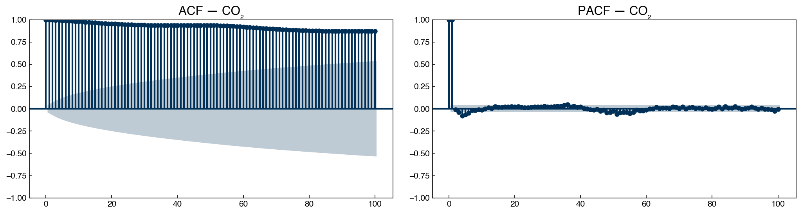
The ACF for CO₂ remains very high even at 100 weeks — the series has strong long-range dependence. The PACF decays much faster, indicating that most of the predictive information is concentrated in the first few lags (the rest is indirect correlation).
fig, axes = plt.subplots(1, 2, figsize=(14, 4))
plot_acf( dow_df['y:Impurity'], lags=100, ax=axes[0], title='ACF — Dow impurity')
plot_pacf(dow_df['y:Impurity'], lags=100, ax=axes[1], title='PACF — Dow impurity')
plt.tight_layout()
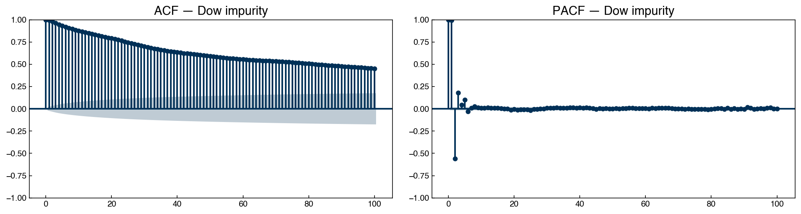
The Dow impurity ACF decays more rapidly than CO₂ (shorter memory), but the PACF still shows significant correlations out to 4–6 lags — meaning the past 4–6 time steps contain direct predictive information.
The shaded region in each plot marks the 95% confidence band for a white-noise series. ACF or PACF values outside this band are statistically significant.
Exercise 114
Investigate the lag-correlation structure of the Dow impurity series.
Using
pearsonr, compute the autocorrelation \(r\) for the Dow impurity series at lags 1, 2, 5, 10, 24, and 48. Plot \(r\) vs. lag as a bar chart.At what lag does the autocorrelation first drop below 0.5?
Plot the ACF and PACF for the Dow impurity series (up to 50 lags). How many lags in the PACF are outside the 95% confidence band? What does this suggest about the minimum useful AR model order?
Stationarity#
What Stationarity Means#
A time series is stationary if its statistical properties do not change over time:
The mean is constant (no trend).
The variance is constant (no heteroscedasticity).
The autocorrelation depends only on the lag, not on when the lag is measured.
Most time series models (AR, ARIMA, spectral methods) assume stationarity. Fitting them to non-stationary data leads to spurious correlations and unreliable forecasts.
Augmented Dickey-Fuller Test#
The Augmented Dickey-Fuller (ADF) test evaluates the null hypothesis that the series has a unit root (i.e., is not stationary). A small p-value rejects the null hypothesis and provides evidence of stationarity.
from statsmodels.tsa.stattools import adfuller
adf_result = adfuller(co2_df['co2_interp'].dropna())
p_val = adf_result[1]
print(f'ADF p-value: {p_val:.4f}')
print(f'P(stationary) ≈ {1 - p_val:.4f}')
ADF p-value: 0.9612
P(stationary) ≈ 0.0388
# Rolling statistics confirm non-stationarity visually
window = 52
stats = co2_df['co2_interp'].copy().to_frame()
stats['rolling_mean'] = co2_df['co2_interp'].rolling(window).mean()
stats['rolling_std'] = co2_df['co2_interp'].rolling(window).std()
stats[['rolling_mean', 'rolling_std']]['1980':'1985'].plot(figsize=(10, 3))
plt.title('Rolling mean and std — CO₂ (1980–1985)')
plt.tight_layout()
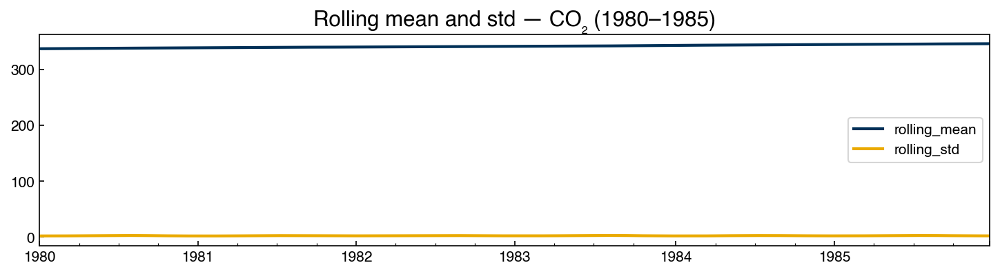
The rising mean confirms what the ADF test found: CO₂ is not stationary.
First-Order Differencing#
Differencing subtracts each value from the previous one: \(\Delta x_t = x_t - x_{t-1}\)
This removes linear trends: if \(x_t\) increases at a roughly constant rate, then \(\Delta x_t\) fluctuates around zero.
co2_df['co2_diff'] = co2_df['co2_interp'] - co2_df['co2_interp'].shift(1)
fig, axes = plt.subplots(2, 1, figsize=(10, 6))
co2_df['co2_interp'].plot(ax=axes[0], title='CO₂ (original)')
co2_df['co2_diff'].dropna().plot(ax=axes[1], title='CO₂ (first difference)')
plt.tight_layout()
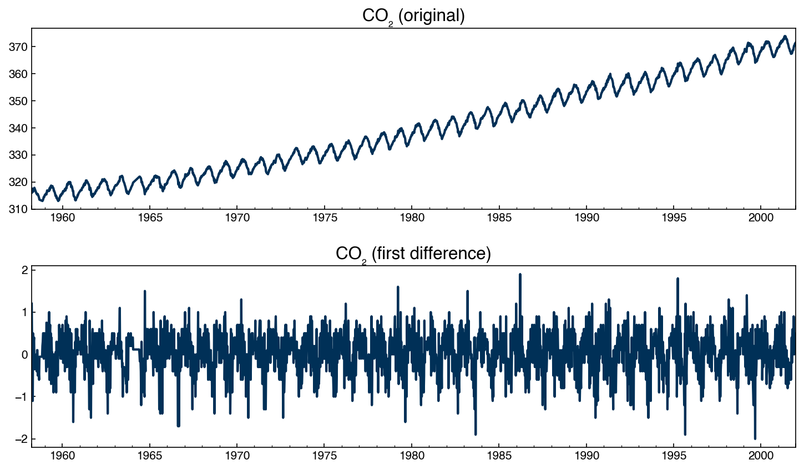
# Check stationarity of the differenced series
adf_diff = adfuller(co2_df['co2_diff'].dropna())
print(f'ADF p-value after differencing: {adf_diff[1]:.4e}')
print(f'P(stationary) ≈ {1 - adf_diff[1]:.6f}')
ADF p-value after differencing: 1.3013e-28
P(stationary) ≈ 1.000000
fig, axes = plt.subplots(1, 2, figsize=(14, 4))
plot_acf( co2_df['co2_diff'].dropna(), lags=100, ax=axes[0], title='ACF — CO₂ first diff')
plot_pacf(co2_df['co2_diff'].dropna(), lags=52, ax=axes[1], title='PACF — CO₂ first diff')
plt.tight_layout()
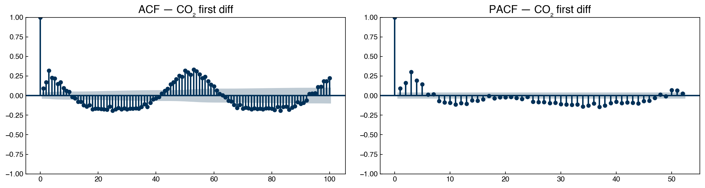
After differencing, the ACF decays rapidly and the ADF test confirms stationarity. Notice that the seasonal pattern (annual cycle at lag ≈ 52 weeks) is now clearly visible in the ACF — differencing removed the trend but the seasonality remains.
Exercise 115
Apply first-order differencing to the Dow impurity series and test for stationarity.
Compute
dow_diff = dow_df['y:Impurity'] - dow_df['y:Impurity'].shift(1).Run the Augmented Dickey-Fuller test on the original Dow series and on
dow_diff. Report both p-values. Is the original series stationary?Plot the ACF and PACF of
dow_diff(lags = 50). How many lags are statistically significant in the PACF? This number (\(p\)) will be our starting point for AR model selection in Topic 6.2.Compare the ACF of the Dow first difference to the ACF of the CO₂ first difference. What qualitative differences do you observe?
Summary#
Time series data are not i.i.d.: observations close in time are correlated, violating the assumptions of standard regression and classification methods. Train/test splits must respect chronological order.
A time series can be decomposed into trend (\(T\)), seasonality (\(S\)), cyclicity (\(C\)), and noise (\(\varepsilon\)). Understanding which components are present guides preprocessing and model selection.
Missing values in time series should be filled before analysis. Linear interpolation is usually the safest choice for short gaps; large gaps may need to be discarded.
Moving averages (
rolling().mean()) and exponential smoothing (ewm()) smooth out short-term fluctuations to reveal trend and seasonality. The window size or smoothing parameter controls the trade-off between noise reduction and signal preservation.ACF plots the total correlation between \(x_t\) and \(x_{t-k}\) at each lag \(k\). PACF shows only the direct (partial) correlation, removing indirect effects. Values outside the confidence band are statistically significant.
Stationarity (constant mean, variance, and autocorrelation structure) is required by most time series models. The Augmented Dickey-Fuller test quantifies how likely a series is to be non-stationary. First-order differencing removes linear trends and often achieves stationarity.
Additional Reading#
Hyndman, R. J. & Athanasopoulos, G. (2021), Forecasting: Principles and Practice (3rd ed.) — comprehensive open-access textbook at otexts.com/fpp3
Brockwell, P. J. & Davis, R. A. (2016), Introduction to Time Series and Forecasting (3rd ed.) — rigorous treatment of ARIMA and spectral methods
pandas documentation: Time Series / Date functionality, Window functions
statsmodels: tsa module